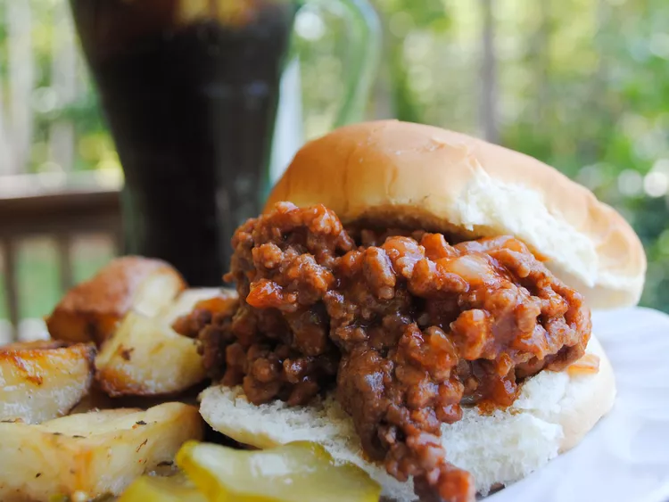

Pennsylvania Coal Region Barbecue

Description
Traditional sweet and sour Pennsylvania barbecue served on hamburger buns is a wonderful staple in the Coal Region of Northeastern PA.
Ingredients
- 1 pound ground beef
- 1 medium onion, chopped
- 3/4 cup ketchup
- 1 and 1/2 tablespoons white vinegar
- 1 and 1/2 tablespoons brown sugar
- 1 and 1/2 teaspoons prepared yellow mustard
- salt and pepper to taste
- 4 hamburger buns
Steps
- Cook ground beef and onion in a large skillet over medium-high heat until beef is browned and crumbly and onion is translucent, 5 to 7 minutes. Drain excess grease.
- Reduce the heat to medium. Stir in ketchup, vinegar, brown sugar, mustard, salt, and pepper; simmer for about 15 minutes.
- Spoon beef mixture onto buns to serve.